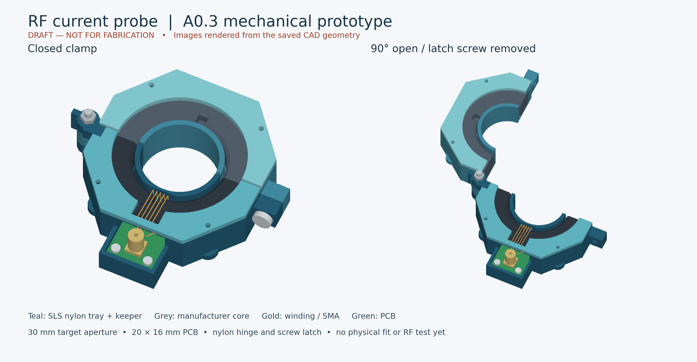
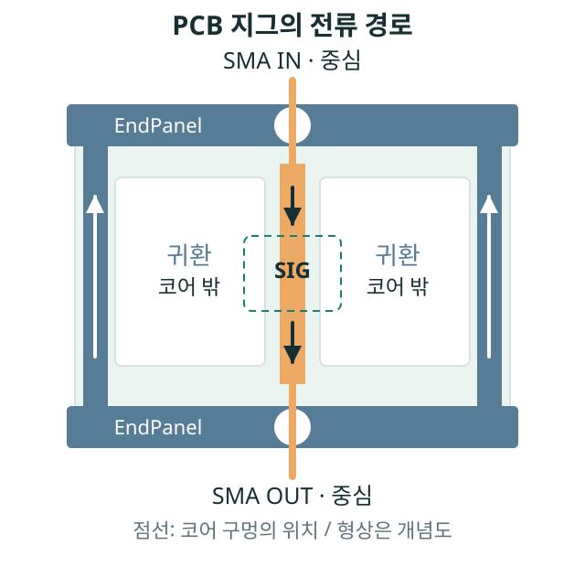
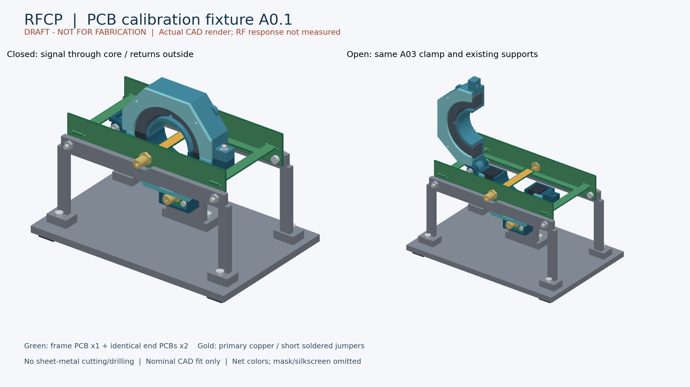
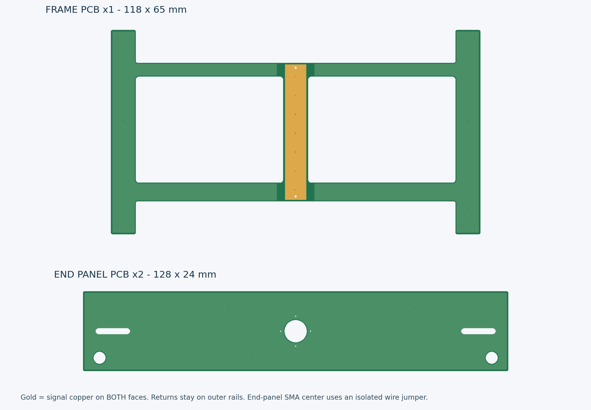
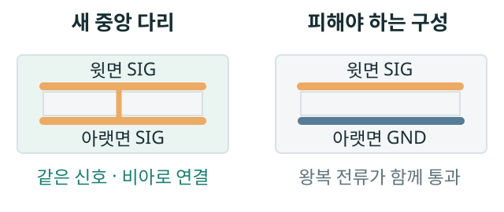
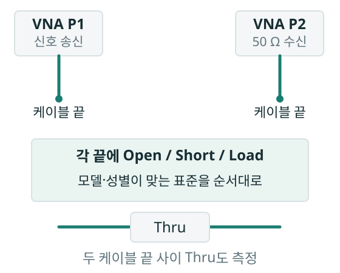

하드웨어 · 측정 도구 / 2026.09.17
RF 전류 프로브
제작부터 캘리브레이션까지
케이블을 집게로 감싸고, 고주파 전류의 변화를 봅니다.
통신 장애와 함께 나타나는 노이즈를 조사하기 위한 수동 센서입니다.
먼저 1~100 MHz의 재현성을 확인합니다. 전체 개발 목표는 100 kHz~300 MHz, 500 MHz는 특성 확인·확장 목표입니다. 아래 대역과 감도 예제는 실측 성능표가 아닙니다.
VNA 연결 순서부터 보기 ↓어떤 전류를 측정하나요?
집게 구멍을 통과하는 전류의 방향 있는 합, IΣ를 봅니다.

나가는 전류와 돌아오는 전류를 같이 감싸면 정상적인 왕복 성분은 상쇄됩니다. 남는 RF 합전류를 통해 다른 귀환 경로와 공통모드 노이즈를 조사합니다.
예를 들어 같은 순간에 +10 mA와 −10 mA가 지나면 합은 0입니다. 전체 묶음의 값이 작아도 내부 도체군의 스트레스는 남아 있을 수 있습니다.
DC 전류를 읽는 프로브는 아닙니다. 상쇄되지 않은 DC는 코어의 RF 감도를 바꿀 수 있으므로 별도로 확인합니다.
코어·권선 → 헤드 PCB → SMA·동축 → 검증된 감쇠·보호 체인 → 50 Ω 수신기
동판 가공 대신, PCB 3장으로
Frame 1장 + 같은 EndPanel 2장. 납땜과 나사 조립을 중심으로 바꿉니다.
기존에는 동판·동띠를 잘라 구멍을 가공했습니다. 새 초안은 판의 외곽·슬롯·전류 경로를 PCB 제작에 맡깁니다. 권선 감기, 짧은 연결선 납땜, 패드 직선 재단은 남습니다. 출력물 공차와 실제 끼움은 아직 확인 전이므로 무가공 조립이 보장된 상태는 아닙니다.

가운데 신호 길과 양옆 귀환 길은 서로 다른 동박입니다. 두 귀환은 양끝 EndPanel에서 SMA 외피와 연결됩니다.
- Frame × 1
- 118 × 65 mm, 두께 1.0 mm 초안. 두 개의 큰 창 사이에 폭 8 mm의 중앙 다리가 있습니다.
- EndPanel × 2
- 128 × 24 mm, 두께 1.0 mm 초안. 외곽 귀환 레일을 슬롯에 끼워 양면 납땜합니다.
- SMA 중심 접점
- 짧은 연결선으로 Frame의 SIG에 직접 연결합니다. EndPanel의 GND에 연결하지 않습니다.
- SMA 외피
- EndPanel의 노출 동박과 접촉하고, 양옆 레일로 귀환합니다. 실제 접촉·체결을 확인해야 합니다.
치수는 CAD 설계값입니다. 이 그림은 전류 경로 설명용이며 치수 도면·조립 검사·RF 해석을 대신하지 않습니다.
새 PCB와 실제 조립 CAD 그림 보기
Frame의 양옆 레일을 두 EndPanel에 끼우고 납땜합니다. 금색 중앙 다리가 코어 안을 지나며, 녹색 바깥 레일은 밖으로 돌아갑니다. 아래는 저장된 CAD를 렌더링한 이미지로 실물 사진이 아닙니다.


중앙 다리의 앞·뒤는 모두 SIG
신호 동박 바로 아래에 GND를 깔아 함께 코어에 통과시키면 귀환전류까지 감싸게 됩니다. 새 Frame은 양면 모두 같은 신호 경로이고, 귀환은 양옆으로 떨어뜨립니다.

PCB라는 이유로 50 Ω가 되지는 않습니다
양끝 SMA, 중앙 다리, 넓은 귀환 루프의 조합은 반사·방사·직접 픽업을 만들 수 있습니다. 지그 단독 측정 → 헤드 장착 영향 → 프로브 출력 측정 순서로 확인합니다.
첫 결과는 같은 지그에서의 상대 응답입니다. 코어 위치의 전류와 기준면을 입증한 뒤에 전달 임피던스 ZT를 계산합니다.
초안과 기존 기록의 관계
프로브 헤드 PCB는 A0.2, 집게는 A0.3입니다. 새 교정지그는 PCB A0.1 초안이며 기존 동판 F-A A0.1을 대체하는 작업입니다. 기존 동판 지그의 간섭·조립 검사나 견적이 새 PCB 지그에 자동으로 적용되지는 않습니다. 이 보고서는 새 PCB 구조와 앞으로 수행할 교정 절차를 설명합니다.
캘리브레이션: 연결을 네 번 나눕니다
P1은 신호를 보내고, P2는 받습니다. 단계를 누르면 케이블과 50 Ω 부하의 위치가 바뀝니다.

0 / VNA 오차부터 정리
케이블 끝에서 O/S/L/T 교정
VNA와 두 테스트 케이블의 영향을 교정합니다. 이 단계만으로 프로브의 감도가 정해지는 것은 아닙니다.
- 실제 장비 HW/FW/GUI, 케이블·표준의 모델과 성별을 확인합니다.
- 각 케이블 끝에 Open / Short / Load를 순서대로 연결하고 두 끝 사이의 Thru를 측정합니다.
- 지원되는 전체 2포트 교정을 적용하고 검증용 부하·Thru를 다시 연결해 확인합니다.
- P2 위치
- 교정 표준 / Thru
- 외장 부하 위치
- SOLT용 표준 Load를 순서대로 사용
- 저장할 기록
calibration/ + setup 사진·장비 설정
교정 표준 Load와 측정 중 사용하는 외장 50 Ω 부하는 역할을 구분합니다.
가장 중요한 전환은 2 → 3입니다. RF를 끄고 P2 케이블을 지그 OUT에서 프로브 출력으로 옮깁니다. 프로브에 붙였던 외장 50 Ω 부하는 지그 OUT으로 옮깁니다. 같은 부하 한 개를 역할을 바꿔 재사용할 수 있습니다.
1차 경로와 프로브 출력에 각각 종단이 필요한 이유
지그의 중심 도체와 귀환은 일차 회로이고, 권선·프로브 출력은 별도의 이차 회로입니다. 2단계에서는 P2가 일차를 종단하고 외장 부하가 프로브를 종단합니다. 3단계에서는 외장 부하가 일차를 종단하고 P2가 프로브를 종단합니다. 하나의 출력에 50 Ω 두 개를 병렬로 붙이는 이중 종단과는 다릅니다.
시작 설정과 무전원 점검
| 항목 | 첫 실험 설정안 · 장비에서 지원 여부 확인 |
|---|---|
| 스윕 | 1~100 MHz, 401점, linear |
| 출력 / IF BW / 평균 | −20 dBm / 1 kHz / 실제 평균값 기록 |
| 후속 구간 | 100 kHz~10 MHz, 100~300 MHz, 필요 시 300~500 MHz. 유효 구간을 각각 판정 |
| 선형성 비교 | −30 / −20 / −10 dBm 시작안. 장비 정격과 실제 선형 범위 안에서만 수행 |
RF 케이블·부하를 분리한 상태에서 지그 IN–OUT 중심끼리, 외피끼리 연속성을 확인하고 중심–외피 분리를 확인합니다. 프로브 SMA 중심–외피에는 권선의 낮은 DC 저항이 보일 수 있으며 정상입니다. 일차 도체와 권선의 의도치 않은 도통을 따로 검사합니다. DMM 검사는 내전압 시험이 아닙니다.
교정키트의 성별·모델·Thru 지연을 실제 구성에 맞춥니다. 알 수 없는 어댑터를 길이 0의 이상적인 Thru로 입력하지 않습니다. 단순 Thru 정규화만 했다면 전체 2포트 교정으로 기록하지 않습니다.
그래프를 얻은 다음, 언제 A로 바꾸나요?
S21은 입력 대비 출력의 비율입니다. 지그 전류가 검증되어야 감도 ZT를 구할 수 있습니다.
먼저 상대 응답, 그다음 전류
상대 단계: 같은 지그·배치·체인에서 5턴의 응답과 재장착 변화를 비교합니다. 전류 모델이 없으면 ZT와 A 값을 비워 둡니다.
정량 단계: 코어 위치의 전류, 기준면, 누설·잡음·선형성·반복성을 확인한 구간에서만 ZT를 계산합니다. 좋은 S11 하나만으로 이 조건들이 모두 증명되지는 않습니다.
ZT(f) = Vout(f) / IΣ(f)
Vout은 정의된 50 Ω 부하에 걸리는 전압입니다. 이후 같은 체인의 유효한 주파수에서 IΣ = Vout / ZT로 환산합니다.
S21 × 50 식과 1−S11 보정의 조건
동일한 실수 50 Ω 기준 임피던스, 충분한 정합, 코어 전류를 입력 진행파로 근사할 수 있는 지그, 정리된 케이블·기준면과 50 Ω 출력 부하에서만 |ZT| ≈ 50|S21|을 적용합니다. 위상은 코어 위치까지의 지연을 따로 확인해야 합니다.
ZT = 50 S21 / (1−S11)은 입력 기준면의 전류와 코어 위치의 전류가 같고 분기 전류·지연의 영향이 정리된 모델에서만 유효합니다. 조건이 안 맞으면 코어 전류 모델 HI가 필요하며, 확보 전에는 상대 측정을 유지합니다.
Tekbox 매뉴얼의 S21+34 관계를 참고하되 같은 페이지의 전력 차 식은 부호가 불일치합니다. 정의상 S21[dB] = Pout−Pin이므로 계산에는 Pout−Pin+33.9794를 적용합니다.
이상적인 정합 50 Ω 조건이라면
실제 PCB 지그의 측정값을 넣는 도구가 아닙니다. 환산식의 의미를 보여주는 계산입니다.
같은 주파수·교정 체인에서 단일 정현파의 RMS 값끼리 계산합니다. 이 예제는 센서 감도·최소 검출 전류를 보장하지 않습니다.
50 Ω 교정지그의 전달 임피던스 관계는 Tekbox TBCPx 교정지그 매뉴얼을 참고했습니다. 현재 PCB 지그의 정합과 전류 모델은 실측 전입니다.
한 번 나온 곡선을 교정값으로 고정하지 않습니다
먼저 5턴으로 아래 비교를 수행한 뒤, 필요하면 같은 코어에서 3턴·7턴을 비교합니다.
| 비교 | 확인하는 질문 | 초기 내부 목표 · 미달성 |
|---|---|---|
| 입력 레벨 변경 | 포화 없이 비례하는가? | 입력 +10 dB에 출력 +10±1 dB. 정규화된 S21은 거의 일정 |
| 최소 5회 열고 닫기 | 코어 접합과 잠금이 반복되는가? | 1~100 MHz 기준 대비 ±1 dB |
| 중심·가장자리·복귀 | 도체 위치에 얼마나 민감한가? | 허용 위치와 오차를 실측으로 결정 |
| 왕복 도체 함께 통과 | 상쇄가 실제로 되는가? | 같은 일차 전류 기준 20 dB 이상 감소를 시작 목표로 검토 |
| 의도한 자기 결합 제거 | 직접 누설을 센서 출력으로 읽지 않는가? | 유효 신호보다 20 dB 이상 낮은 픽업 |
| 헤드 유무·출력 상태 비교 | 센서가 측정하려는 현상을 바꾸는가? | 지그·전류·실제 링크 변화 기록 |
귀환선을 옮기면 일차 전류도 바뀔 수 있으므로 같은 소스 레벨만으로 동일 전류를 가정하지 않습니다. 잡음·깊은 null·클리핑·미평가 구간은 마스킹하고 대역 밖으로 외삽하지 않습니다.
스코프로 옮기면 전압부터 저장합니다
VNA의 교정 결과가 스코프 내부 응답까지 보정해 주지는 않습니다.
단일 주파수 비교
VNA 측정을 저장하고 RF OFF에서 재배선합니다. 벤치 소스는 sweep에서 CW, P1만 활성화로 바꿉니다. 파형에 고조파가 있을 수 있으므로 기본파 RMS를 따로 분석합니다.
잠정 장비는 Tektronix MSO4054입니다. 실물 모델·입력 상태 확인 후 DC coupling / 50 Ω / Voltage 1× / FULL / Sample 설정안을 적용합니다. 내부 50 Ω를 사용하면 외장 feed-through 50 Ω를 병렬로 더하지 않습니다.
전류 환산을 허용하는 조건
같은 헤드·권선·케이블·감쇠기, 같은 출력 기준면, 유효 ZT와 스코프 응답·부하가 확인되어야 합니다. VNA 연결에 사용한 BNC–SMA 어댑터를 제거했다면 그 영향도 정리해야 합니다.
확인 전 결과는 V 단위입니다. 펄스의 최대 전압을 한 주파수의 ZT로 나누지 않습니다. 감쇠기를 서지 보호기로 간주하지 않고, 현장 적용 전 보호·삽입 영향·순 DC 영향을 확인합니다.
50 Ω 수신기와 전류 환산의 기본 관계: Tekbox RF 전류 프로브 FAQ. 실제 장비 설정·안전 조건은 해당 모델과 사용 체인에서 별도로 검증합니다.
무엇을 저장해야 다시 믿고 쓸 수 있나요?
곡선 이미지에 더해 원시 S-parameter, 설정, 실제 조립 상태가 필요합니다.
측정 ID 하나에 남길 파일
측정 ID/
setup_photos/
instrument_setup/
calibration/
T01_notes.md
fixture_empty.s2p
fixture_probe_loaded.s2p
probe_transfer_01.s2p
probe_transfer_01.json
probe_transfer_02.s2p … 05.s2p
run_notes.md교정표와 함께 남길 조건
헤드 ID·리비전, 코어, 턴 수·극성, 차폐, 지그 ID, 케이블·부하·감쇠기 ID, 교정 ID·기준면, 출력 레벨, 주파수·IF BW·평균, 도체 위치, 온도와 시각을 기록합니다.
코어·권선·차폐·측정 체인이 바뀌면 교정의 재사용 가능성을 검토합니다. 원시 파일을 덮어쓰지 않고 새 기록으로 남깁니다.
벤치 체크리스트 받기 (.md) ↓현재 확보한 증거와 아직 없는 것
- 헤드 PCB A0.2: 저장된 설정 기준 ERC/DRC 위반 0건. 이는 RF 성능 검증이 아닙니다.
- 집게 A0.3: 국소 보강 및 공칭 CAD 검사 기록. 출력 공차·강도·실물 맞춤은 미검증입니다.
- 분석 코드: 2026-09-16 저장 로그의 110개 자동시험 통과와 합성 리허설. 실측 데이터를 대신하지 않습니다.
- PCB 교정지그 A0.1: 새 구조 초안. 이 페이지의 도식·교정 절차는 RF 성능 확인 전입니다.
- 실제 ZT 교정표, 유효 대역, 최소 검출 전류, 허용 전류·내전압·현장 보호 정격은 아직 없습니다.
다음 실험은 조립·무전원 점검 → 지그 through → 5턴 상대 S21 → 반복성·누설 비교입니다. 그 결과로 유효 대역과 다음 설계 변경을 결정합니다.